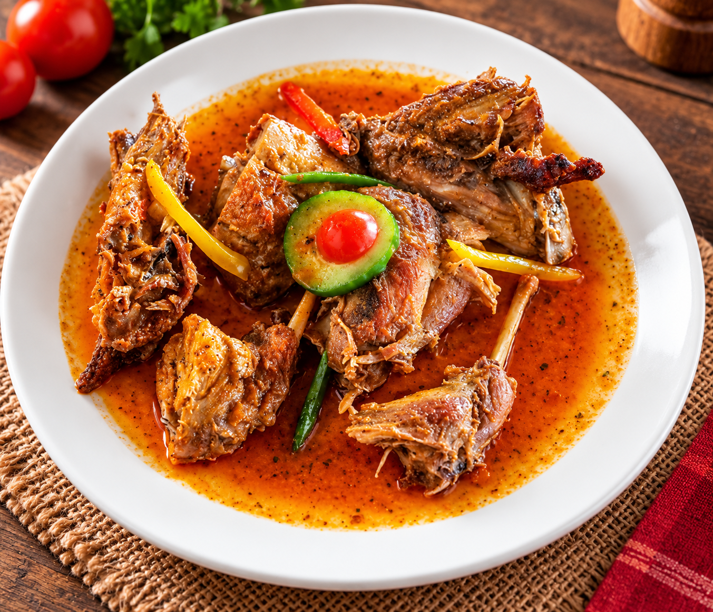

Welcome to Mama's Restaurant
Enjoy freshly prepared meals made with quality ingredients in a warm and welcoming environment.
Today's Specials
Mama's Rabbit Special

Tender rabbit, seasoned with a blend of herbs and spices and slowly grilled over a traditional charcoal fire for a rich, smoky flavour. Served with your choice of sides and fresh seasonal vegetables.
Special Price: US$9.00
About Us
Mama's Restaurant is committed to serving delicious, freshly prepared meals coocked over a traditional charcoal fire, delivering authentic flavours in a warm, friendly and comfortable setting.